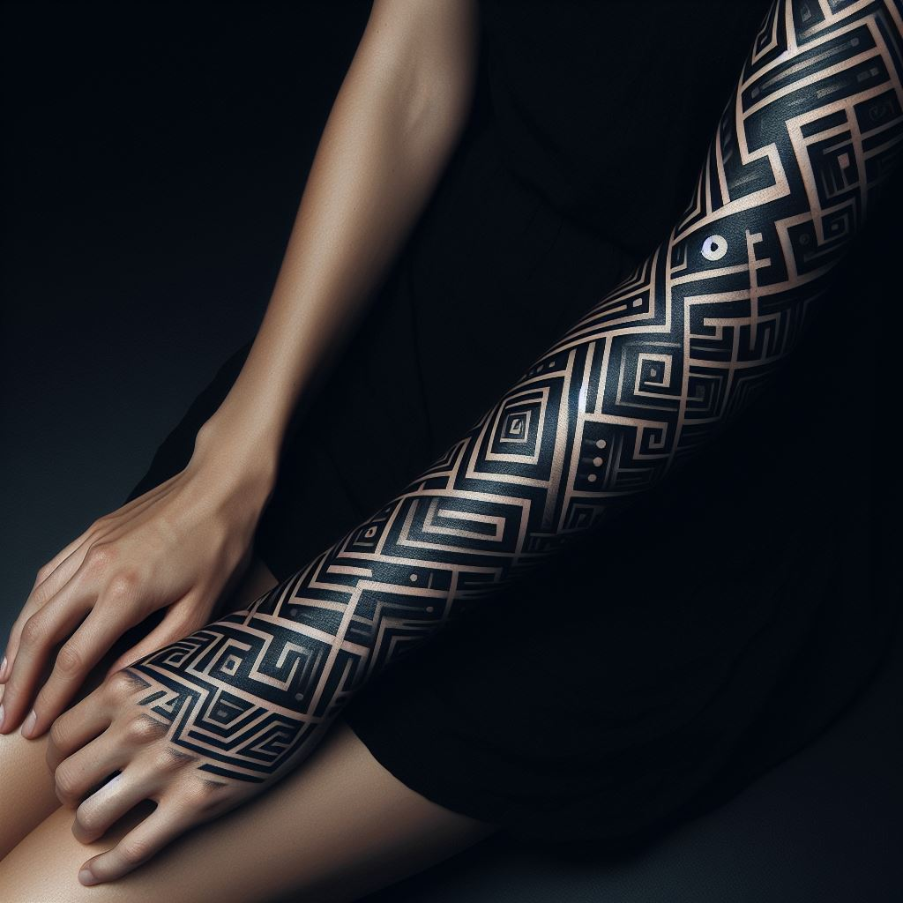

Tipos de Tatuagem
Há diversos tipos de tatuagem que você pode escolher e é realmente necessário que saibamos quais eles são, principalmente para entender como eles podem ficar depois da cicatrização.
Cada tipo de tatuagem pode ter um cuidado, um pré, um pós diferente, além de claro, terem níveis de dor diferentes e demorarem tempos diferentes para cicatrização.

Fine lines (em sua tradução literal, linhas finas) são tatuagens com traços bem fininhos, normalmente pequenas, sutis e minimalistas, mas essa técnica pode sim ser usada em tatuagens maiores.
Esse estilo está com alta popularidade por conta das redes sociais, mas também as pessoas têm razão! Além de muito bonita, a tatuagem fine line é uma ótima escolha para iniciantes.

Uma tatuagem blackout ( em tradução literal, blecaute ou apagão ) é uma tatuagem que o nome é bem sugestiva, ela consiste em, literalmente, deixar uma área do seu corpo completamente preta com a tinta para criar um fundo inteiro.
Porém, diferente do que muitas pessoas pensam, uma blackout pode sim ter algum detalhe ou desenho, principalmente ao redor, porém, dentro do fundo, não!
É uma tatuagem cultural de um povo nativo da Nova Zelândia, uma representividade da cultura deles, a tatuagem define a nobreza do clã ao qual o homem pertence.
Esse estilo de tatuagem também pode ser conhecido como ta moko, elas têm foco no rosto e áreas visíveis no corpo para serem mostradas com orgulho.
Por conta disso, é difícil encontrar exemplos que façam justiça à esse estilo de tatuagem, isso porque cada símbolo significa algo para cada clã.
Para algumas pessoas, é uma tatuagem que traz a representação da força interna, algumas vezes um tipo de amuleto capaz de combater inveja e mal olhado.
Em sua maioria, é uma referência à liberdade, identidade pessoal, história familiar ou alguma conexão espiritual, mas em alguns povos poderia mostrar a posição de um guerreiro dentro da família, na política ou no exército.
A grande parte das tatuagens tribais consistem em desenhos geométricos e/ou abstratos, por isso se tornou muito famosa fora de povos que as usam.
Níveis de Dor
Dependendo do local onde você deseje fazer a tatuagem, você terá um nível de dor diferente, não podemos falar exatamente como vai ser porque as pessoas tem diferentes níveis de sensibilidade à dor e locais onde podem ser mais sensíveis que outros, porém, em geral, há uma regra:
Quanto mais fina é a pele do local que você vai fazer a tatuagem, mais dói.
E isso tem um motivo!
Nessas áreas a pele é muito mais sensível, além dos nervos ficarem mais perto da superfície da pele, há também outros casos, mas vamos explicar direitinho aqui!
Red flags
Há algumas red flags (bandeiras vermelhas, ou seja, algo de errado) que você deve se atentar ao fazer uma tatuagem, essas que, ao serem notadas, você pode ( E DEVE ) pedir que seu tatuador arrume aquilo, ou simplesmente cancelar a sessão
Aqui, separamos algumas delas para discutir:
-
Não abrir descartáveis em sua frente
O motivo disso é simples, caso a pessoa não abra, por exemplo, uma agulha em sua frente, pode ser que tenha sido usada em outra pessoa.
Mas descartáveis não são apenas agulhas, mas também papel para limpeza, containers de tinta, plástico filme, luvas, máscara, ou seja, tudo o que pode tocar você ou seus fluídos!
Não embalar não descartáveis
Levando em conta o anterior, isso é algo extremamente importante também, há itens, como a máquina, a cadeira, entre outros que não podem ser jogados fora depois de seu uso, por isso, esses itens devem ser embalados de forma que, assim que acabar a sessão, o plástico seja jogado fora para higienização geral.
-
Utilização de EPI (Equipamento de Proteção Individual)
Em geral, luvas, máscaras, qualquer coisa que faça que você não troque fluídos (sangue, suor) com seu tatuador, não apenas para a proteção dele, mas também a sua, afinal, qualquer coisa que a pessoa poderá ter, sem o EPI, ela poderá passar para você!
Sendo um procedimento que irá colocar um ferimento aberto em sua pele, uma das principais coisas que você deve olhar, é onde você está fazendo, se o lugar parece limpo, porque, afinal, você não vai querer que caia poeira ou uma teia de aranha no seu machucado, vai?